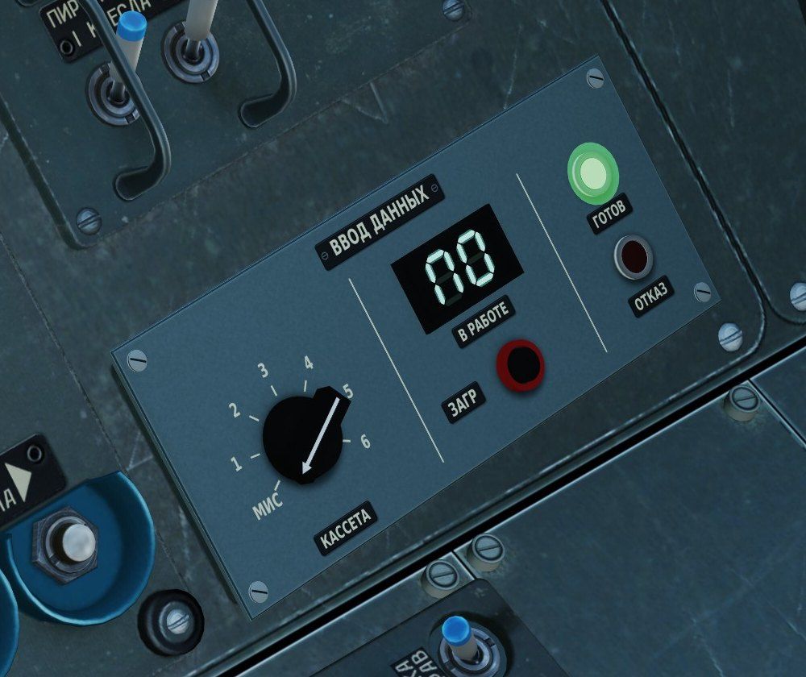

ВВОД ДАННЫХ: loading a cartridge
A data input plate on the blank cover beside your right hip. Turn the КАССЕТА knob to МИС for the mission's own presets or to one of six cartridges, press ЗАГР, and the plate reads it.
- The В РАБОТЕ window flashes while it reads, then shows what is in: П0 for the mission, П1 to П6 for a cartridge.
- ГОТОВ (green) when it worked, ОТКАЗ (red) when there is no cartridge for that number; the one loaded before stays in.
- Dark without electric power; a short lamp test when power comes on.